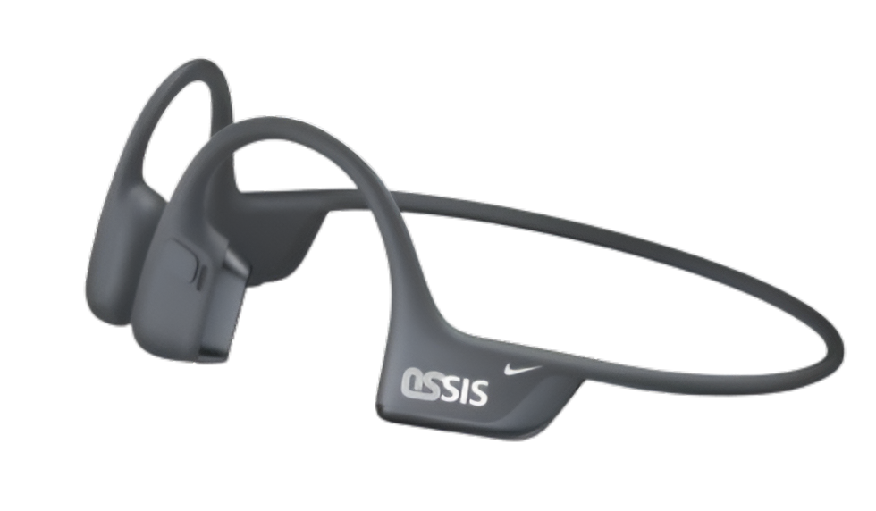

Revolucionamos tu audición con tecnología de conducción ósea que protege tu salud y te mantiene en movimiento.
Nuestra plataforma digital está diseñada exclusivamente para deportistas y jóvenes de la Generación Z en Guatemala, fusionando la máxima innovación tecnológica con el rendimiento deportivo y el cuidado de la salud auditiva. Como subcategoría oficial de Nike, este espacio web actúa como un centro interactivo y educativo integral. Aquí encontrarás información técnica precisa sobre el funcionamiento de los audífonos, promociones exclusivas de lanzamiento con disponibilidad inmediata, y una serie completa de tutoriales en video enfocados en el uso ergonómico, configuración óptima y mantenimiento higiénico del dispositivo, garantizando una experiencia de audio de alta fidelidad sin aislamiento del entorno.

Los audífonos OSSIS transmiten el sonido mediante vibraciones a través de tus pómulos, dejando tus oídos completamente libres y seguros.
Al no obstruir tu canal auditivo, disfrutas de tu música favorita o atiendes llamadas mientras sigues atento al tráfico urbano o a las personas a tu alrededor. Es la solución perfecta para el running y el ciclismo en Guatemala.
Eliminan por completo la acumulación de bacterias al no introducirse en el oído. Además, evitan de forma proactiva la sordera a largo plazo al no impactar directamente sobre la membrana del tímpano.
Construidos con materiales ultraligeros y un marco de titanio flexible de alta resistencia que garantiza que no se muevan de su lugar al correr o saltar, eliminando el dolor o cansancio por uso prolongado.
Lleva tu entrenamiento al siguiente nivel con tecnología de audio de última generación. Por tiempo ilimitado, disfruta de beneficios exclusivos en tu compra:
20% de Descuento sobre el precio original de lanzamiento.
Envío totalmente gratuito a cualquier punto de la República de Guatemala.
Garantía de 2 años respaldada de forma oficial por la marca.
Disponibilidad Inmediata: Adquiérelos en línea o de forma presencial exclusivamente en todas las sucursales de Nike (No Outlets) en Guatemala.
Comprar en Línea AhoraTodos los fines de semana estaremos ubicados con stands promocionales en los principales puntos de reunión de los grupos runners de la Ciudad de Guatemala. ¡Visítanos y realiza una prueba gratuita de la fidelidad sonora y comodidad de la conducción ósea!